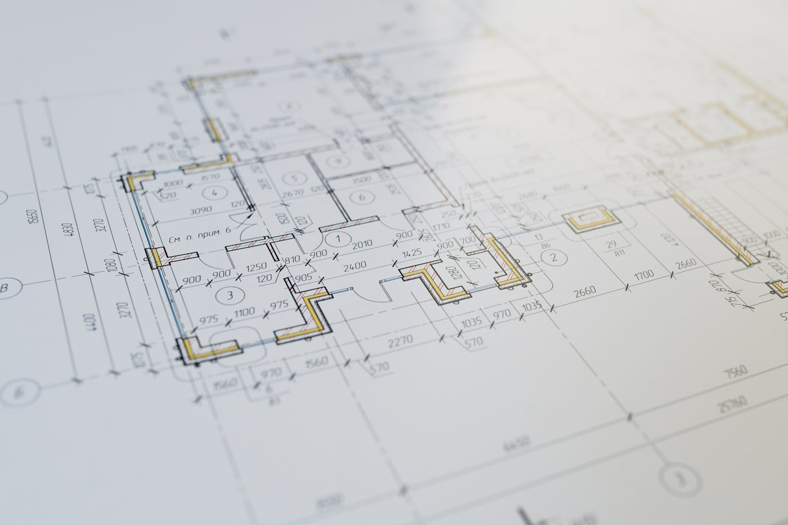
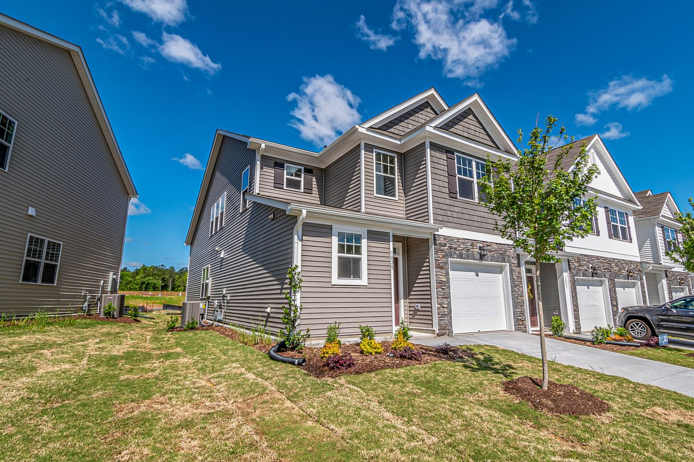
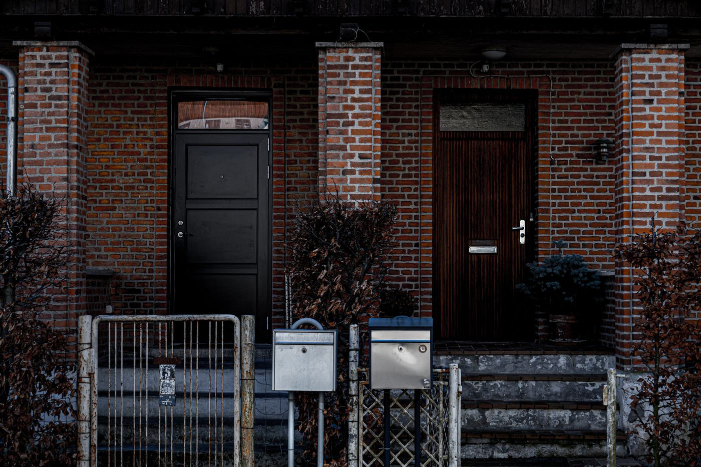

Quick answer: A duplex in Sydney places two separate dwellings on a single lot — attached or detached. Since the July 2024 Housing SEPP reforms, dual occupancy is permitted as-of-right in R2 zones across most Sydney LGAs. Minimum lot requirements are generally 400m² with 12m frontage for an attached duplex. Construction costs run $2,500–$3,200 per m² mid-range in 2026, with all-in project costs (including land) typically $1.8M–$3.5M on an established Sydney block. Most compliant designs qualify for CDC approval in 20 business days. Torrens title subdivision adds $30,000–$60,000 but significantly increases end value over strata.
The duplex has had a very good two years. Since the NSW government made dual occupancy an as-of-right option in most R2 zones in July 2024, a quiet activity has been underway in Sydney’s established suburbs — visible in the number of 1970s brick veneers being replaced by something considerably more interesting, and in the feasibility spreadsheets appearing on a lot of kitchen tables.
[Right. Straight face now.] Here is what the decision actually requires: understanding whether your block qualifies, which approval path applies to your specific site, what Torrens title means versus strata and why it matters for financing, what the numbers genuinely look like in 2026, and the situations in which a duplex simply does not stack up financially regardless of what the zoning permits.
- What is a duplex in NSW — and what it is not
- Can you build a duplex on your block?
- DA or CDC: which approval path applies
- Torrens title vs Strata title
- What a duplex costs in Sydney in 2026
- The realistic timeline
- Run the feasibility before the design
- When a duplex is the wrong move
- Questions to ask a duplex builder
- FAQ
What Is a Duplex in NSW — and What It Is Not
In NSW planning terminology, “dual occupancy” and “duplex” refer to the same thing: two separate dwellings on a single lot of land. The terms are used interchangeably in both the Housing SEPP and in the industry. What distinguishes a duplex from other multi-dwelling types is that both dwellings share one land title (at least until subdivision) and sit on one site.
Attached dual occupancy — two dwellings sharing one common wall. The most common configuration on standard suburban lots. Less land required, simpler structural separation, lower cost. Can sit side-by-side (more common on wider lots) or front-and-back (on deeper lots with rear lane access).
Detached dual occupancy — two completely separate freestanding dwellings on the same lot, with no shared walls. Requires a larger lot (typically 600m²+ and 15m frontage) but delivers a product closer to two standalone homes. Higher cost per dwelling. Less common in Sydney’s established suburbs because the lot size requirements exclude many blocks.
A duplex is not a secondary dwelling (granny flat), which is a smaller additional residence typically limited to 60m² under the Housing SEPP. It is also not a townhouse development (which is a multi-dwelling housing type with different planning controls). The distinction matters because each type has different zoning permissions, minimum lot sizes, and approval pathways.
Can You Build a Duplex on Your Block?

Photo via Pexels
The July 2024 amendments to the Housing SEPP 2021 made dual occupancy permitted-without-consent (as-of-right) in R2 Low Density Residential zones across most Sydney LGAs — removing the ability of individual councils to prohibit it in their LEPs. This was a significant reform and the reason duplex activity has accelerated across the middle ring of Sydney since mid-2024.
Whether your specific lot qualifies depends on four checks:
1. Zoning. Your lot must be zoned R2 Low Density Residential or R3 Medium Density Residential. R1 General Residential may also permit dual occupancy depending on the council. Check your lot’s zone on the NSW Planning Portal.
2. Lot size and frontage. The Housing SEPP sets minimum lot area and frontage requirements, which councils can supplement (but not reduce below) in their Development Control Plans. The general minimums:
| Type | Minimum lot area | Minimum frontage |
|---|---|---|
| Attached dual occupancy | 400m² | 12m |
| Detached dual occupancy | 600m² | 15m |
Many established Sydney lots in Blacktown, Parramatta, Liverpool, and Cumberland meet the attached minimum. Many inner-west and North Shore lots do not — particularly those under 400m² or with frontages under 12m. Check before briefing anyone.
3. Heritage. Sites within a Heritage Conservation Area or on the heritage register require DA assessment even if the lot otherwise qualifies for CDC. Demolition of an existing heritage-listed dwelling requires separate heritage consent in most cases. If your block is heritage-affected, get specialist DA advice before assuming the duplex is viable.
4. Other overlays. Bushfire attack level (BAL) zones, acid sulfate soil mapping, flood affectation, and biodiversity value overlays can restrict what is permissible or add significant cost. Check all overlays on the NSW Planning Portal before design begins. For how these site constraints affect approval paths and costs across different Sydney LGAs, see our guide to custom home builders in Western Sydney.
DA or CDC: Which Approval Path Applies
Two approval pathways exist for duplex developments in NSW. Which one applies to your project determines your timeline more than any other single factor.
Complying Development Certificate (CDC): Assessed by a private certifier against the Housing SEPP numerical standards — not by council. If your design complies with all prescribed standards (lot size, frontage, setbacks, height, floor space ratio, site coverage, landscaped area), a CDC can be issued in approximately 20 business days. No council involvement. No neighbour notification. No heritage assessment. For a compliant design on an eligible lot, CDC is the right path — faster, cheaper, and more certain.
Development Application (DA): Required when the site does not meet CDC criteria — heritage overlay, irregular lot, design seeking variations from prescribed standards, or overlays that exempt the site from CDC. Council assesses the DA. Neighbour notification required. Timeline is council-dependent:
| Council | Residential DA timeline (2026) |
|---|---|
| City of Parramatta | 2–4 months |
| Blacktown City Council | 3–5 months |
| Cumberland Council | 3–6 months |
| City of Liverpool | 4–8 months |
| The Hills Shire | 6–12 months |
| Campbelltown / Camden | 6–12 months |
| Northern Beaches Council | 4–9 months |
| North Shore LGAs | 4–12 months |
A well-designed duplex on a compliant lot in most Western Sydney LGAs should qualify for CDC. If your certifier or designer is pushing you toward a DA without a clear explanation of which standard the design fails to meet, ask the question directly. For broader context on DA timelines across Sydney’s councils, see our post on custom home builders in Carlingford, which covers the three-council split in that suburb.
Torrens Title vs Strata Title
This is the decision that affects the financial outcome of the development more than almost any other. Most people do not understand the difference until they are trying to sell or finance one of the dwellings.
Strata title creates a strata scheme over the original lot. Each dwelling becomes a strata lot within the scheme. The land remains as a single parcel with shared ownership. Both dwellings must be dealt with under the strata scheme — including strata levies, shared maintenance, and a strata management structure. Selling one strata dwelling does not require the other owner’s consent, but the strata scheme creates ongoing shared obligations that some buyers find unappealing.
Torrens title subdivides the land itself into two separate lots. Each dwelling sits on its own independent title — effectively two standalone properties that can be sold, mortgaged, or leased entirely independently. No shared scheme. No levies. No common property obligations beyond any easements for shared services.
For investment purposes, Torrens title is almost always preferred. It maximises the end value of each dwelling, simplifies independent financing, and is easier to sell to owner-occupiers who prefer freehold land. The additional cost — typically $30,000–$60,000 for the subdivision survey, title creation, and registration — is recovered many times over in the premium each dwelling commands on the market.
Torrens subdivision runs concurrently with construction (the survey is lodged and processed while the build proceeds) and adds 2–4 months to the administrative process. It does not extend the construction timeline. Plan for it from day one, not as an afterthought at practical completion.
What a Duplex Costs in Sydney in 2026

Photo via Pexels
Duplex construction costs in Sydney are quoted per square metre for the combined gross floor area of both dwellings. A duplex totalling 280m² (2 × 140m²) and a duplex totalling 400m² (2 × 200m²) have materially different cost profiles even at the same rate per square metre.
| Specification | Cost per m² (both dwellings combined) |
|---|---|
| Entry / volume builder | $1,900 – $2,400 |
| Mid-range custom | $2,500 – $3,200 |
| Premium custom | $3,200 – $4,500 |
A 280m² duplex (2 × 140m²) at mid-range specification runs $700,000–$896,000 for construction. A 360m² duplex (2 × 180m²) at the same specification runs $900,000–$1.15M.
What gets added to the construction cost:
- Demolition and site clearing: $15,000–$40,000
- Geotechnical soil test: $1,500–$3,000
- Architect or building designer: $60,000–$120,000
- Structural engineering, energy assessments, surveys: $15,000–$25,000
- Section 7.11 council contributions (per dwelling): $15,000–$60,000 × 2
- Torrens title subdivision: $30,000–$60,000
- Landscaping, driveways, fencing (both dwellings): $50,000–$120,000
- Land in established Sydney (600–800m²): $700,000–$1,500,000+
A complete duplex project on a well-located established Sydney block — land, demolition, design, approvals, construction, subdivision, and landscaping — lands between $1.8M and $3.5M. The upper end of that range is for premium inner-ring suburbs; the lower end is mid-ring Western Sydney where land values are lower and contributions are smaller.
Section 7.11 council contributions warrant specific attention. These infrastructure contributions are levied per new dwelling and vary significantly by LGA. Campbelltown and Camden can levy $50,000–$60,000 per dwelling — meaning $100,000–$120,000 in contributions alone on a duplex project. Confirm the applicable rate for your council and your proposed dwelling size before the feasibility analysis, not during construction.
The Realistic Timeline

Photo via Pexels
| Phase | CDC path | DA path |
|---|---|---|
| Feasibility and site checks | 2–4 weeks | 2–4 weeks |
| Design and documentation | 3–5 months | 3–5 months |
| Approval | 20 business days | 3–12 months |
| Torrens subdivision (concurrent) | 2–4 months | 2–4 months |
| Construction — single storey | 10–14 months | 10–14 months |
| Construction — double storey | 12–16 months | 12–16 months |
On the CDC path, a Sydney duplex takes 16–22 months from brief to handover. On the DA path, add the relevant council assessment period — typically 3–8 months for Western Sydney, 6–12 months for Hills Shire, Campbelltown, and most North Shore councils. Most established Sydney duplex builds land between 18 and 26 months total.
The Torrens subdivision process runs concurrently with construction. Start it when the slab is poured, not when you hand over the keys. Leaving it to the end adds months unnecessarily and delays the point at which you can independently finance or sell each dwelling.
Run the Feasibility Before the Design
This is the section most duplex guides omit, and it is the most important one. Building a duplex is a development decision, not just a construction decision. The numbers have to work before the design begins. Running the feasibility after you have paid an architect $80,000 is a bad sequence.
A basic feasibility compares total project cost against expected end value:
- End value: What will each completed dwelling sell or be valued at in your suburb? Comparable sales of Torrens-titled duplex dwellings in the same area give you this number. Use recent sales (within 6 months), not optimistic projections.
- Total project cost: Land + demolition + design + approvals + construction + contributions + subdivision + landscaping + finance costs + contingency (allow 10%). This is the all-in number from the cost breakdown above.
- The gap: (End value of dwelling 1 + End value of dwelling 2) minus total project cost. If you are retaining one and selling one, the sold dwelling should ideally cover most of the total cost. If you are selling both, the combined sale should exceed total cost by a margin that justifies the risk and time.
In well-located Western Sydney suburbs with land under $800,000, the numbers often work. In inner-ring suburbs where land costs $1.5M+, the arithmetic is harder — the combined end value of two duplex dwellings on a 700m² block does not always exceed what a single premium custom home on the same block would fetch. Run the numbers before you brief anyone. Our guide on how to choose a custom home builder covers the feasibility conversation you should have in the first meeting.
When a Duplex Is the Wrong Move
This section is the one most duplex builder guides skip. We are not most guides.
Do not build a duplex if your lot does not meet the minimum area or frontage requirements. The planning controls are fixed. A lot at 380m² cannot become a duplex lot by redesigning the floor plan. Check this first, not after design fees have been spent.
Do not build a duplex if the combined end value of both dwellings does not materially exceed your total project cost in your suburb. In some high-land-cost inner-ring suburbs, a duplex produces worse returns than holding the land for a single premium home. Run the feasibility with real comparable sales, not developer assumptions.
Do not build a duplex if your site is in a heritage conservation area and you have not received specialist DA advice on demolition. The approval is not guaranteed, and designing a duplex for a site where demolition is unlikely to be approved is a costly exercise in misplaced optimism.
Do not build a duplex if your construction budget is under $650,000. A genuine custom duplex — with proper structural engineering, specification, and finish quality — cannot be delivered for less at current Sydney rates. Below that threshold, the spec or the process will be compromised. Usually both.
Do not build a duplex if you need to move in within 14 months and your site requires a DA. The timeline simply does not support it.
Questions to Ask a Duplex Builder
Duplex builders carry specific experience requirements that general custom builders may not have. Asking the right questions before engagement saves significant time and money.
- How many duplex developments have you completed in this council area in the last three years? Council familiarity — with the DCP, the certifiers, the assessment officers, and the contribution schedules — is a genuine advantage on duplex projects. Ask for the council names, not just “Sydney.”
- Can you complete a preliminary site feasibility before I commit to design? A builder experienced in duplex development should be able to give you a quick read on lot eligibility, likely approval path, and rough cost range in the first meeting. If they cannot, they are not specialists.
- Do you manage the Torrens subdivision process, or do I need to engage a separate surveyor? Some duplex builders coordinate subdivision as part of their project management. Others leave it to the client. Know which model you are getting before you sign.
- Are you licensed for residential construction in NSW? Verify on the NSW Fair Trading contractor licence register before the first meeting. Current licence, correct class, held by the signing entity.
- What contract type do you use for duplex builds, and how do you handle variations? Duplex builds have more moving parts than a single dwelling — two kitchens, two bathrooms, two sets of services. Variation management matters more, not less.
- Can I see examples of completed Torrens-title duplex projects with comparable specs and speak with those clients? Portfolio photos are easy. Client references who have sold or retained a Torrens-titled duplex tell you whether the end product matched the feasibility projections.
For the full builder vetting framework — licence checks, contract review, and reference questions — see our comprehensive guide to how to choose a custom home builder. For how duplex activity fits into the North Shore’s planning environment specifically, see our post on custom home builders on the North Shore.
FAQ
What is the minimum lot size for a duplex in Sydney?
Under the NSW Housing SEPP 2021, the general minimum is 400m² with 12m frontage for an attached dual occupancy, and 600m² with 15m frontage for a detached dual occupancy. Individual council DCPs can set higher minimums but cannot go below the SEPP standards. Confirm your specific lot against your LGA’s planning controls on the NSW Planning Portal before spending anything on design.
Do I need a DA or CDC to build a duplex in Sydney?
Most Sydney duplex builds on eligible lots can use a Complying Development Certificate (CDC) — approved by a private certifier in approximately 20 business days. A Development Application (DA) is required when the site is in a heritage conservation area, the design seeks variations from planning controls, or overlays exempt the site from CDC. Since the July 2024 reforms, CDC is available for dual occupancy in most R2-zoned suburbs, significantly reducing timelines for compliant designs.
How much does it cost to build a duplex in Sydney in 2026?
Construction costs run $2,500–$3,200 per m² for mid-range specification in 2026, covering both dwellings combined. A 280m² duplex costs $700,000–$896,000 to construct. All-in — including land, demolition, design, approvals, Section 7.11 contributions, Torrens subdivision, and landscaping — a duplex project on an established Sydney block typically totals $1.8M–$3.5M depending on suburb, site, and specification.
What is the difference between Torrens title and Strata title for a duplex?
Torrens title subdivides the land into two independent lots — each dwelling can be sold, mortgaged, or leased entirely separately, like two standalone houses. Strata title creates a scheme over the shared land — both dwellings are strata lots with shared common property obligations. For investment purposes, Torrens is almost always preferred: it maximises end value, simplifies financing, and appeals to a wider buyer pool. Torrens subdivision adds $30,000–$60,000 but is recovered many times over in the premium each dwelling commands.
Can I build a duplex on my Sydney block?
Since July 2024, dual occupancy has been permitted as-of-right in R2 zones across most Sydney LGAs. The key checks: your lot is zoned R2 or R3, it meets the minimum area and frontage requirements, it is not in a heritage conservation area, and no other overlays restrict dual occupancy on your specific site. Check everything on the NSW Planning Portal before briefing a builder or designer — these checks take minutes and can save months of misdirected effort.
How long does it take to build a duplex in Sydney?
From first meeting to handover: CDC path takes 16–22 months; DA path adds 3–12 months depending on the council. Design and documentation runs 3–5 months. Construction for a double-storey duplex runs 12–16 months. Torrens subdivision runs concurrently with construction and should be initiated at slab pour, not at handover.
When is a duplex not a good investment in Sydney?
A duplex does not stack up when the combined end value of both completed dwellings does not materially exceed total project cost; when the lot fails the minimum area or frontage requirements; when the site is heritage-affected and demolition is unlikely to be approved; when the construction budget is under $650,000; or when the required timeline does not fit your financial or personal constraints. Run a proper feasibility analysis — comparing realistic comparable sales against genuine all-in costs — before briefing anyone.